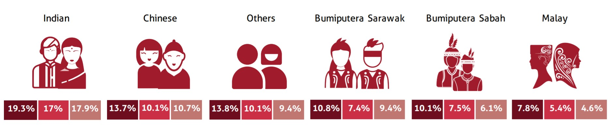
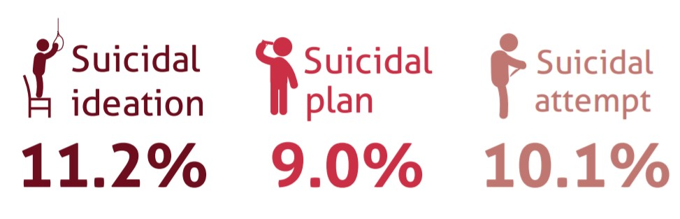
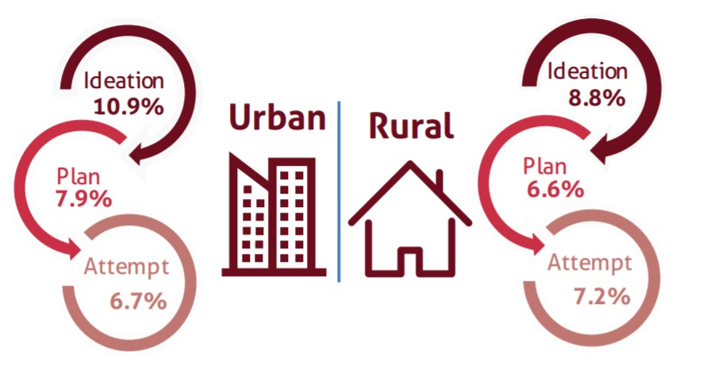
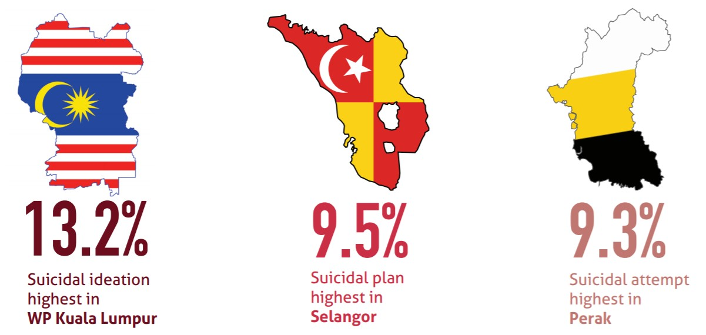
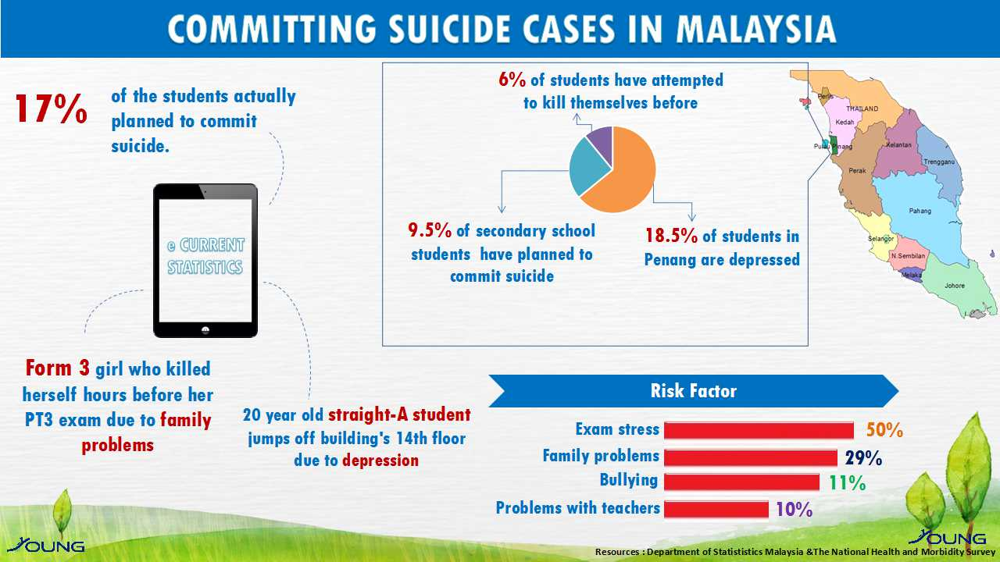
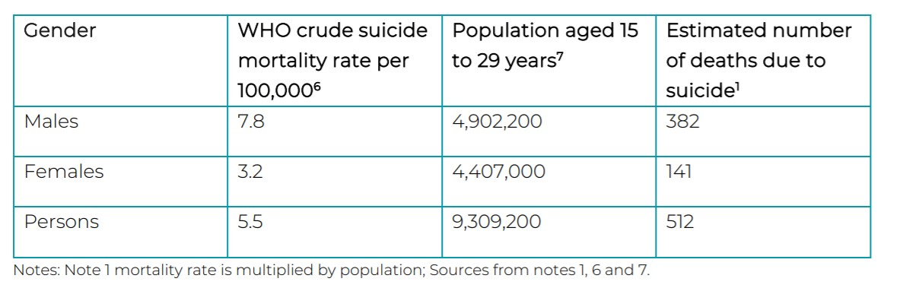

Youth suicidal behaviour encompasses suicidal ideation, plan and attempt at least once within the previous 12 months.

Indians reported much higher rates across all three indicators of suicidal behaviour.

Suicidal behaviour was highest among Form 1 students(12-13 years old).

Rates were higher in urban areas, except for prevalence of suicide attempts, which was slightly lower in urban settings.

Source: National Health and Morbidity Survey 2017: Key Findings from the Adolescent Health and Nutrition Surveys - Infographic Booklet, April 2018

Source: Department of Statistic Malaysia & The National Health and Morbidity Survey

Estimated suicide deaths for Malaysian youths (ages 15 to 29 years) in 2019.
According to a study by Relate Mental Health Malaysia, youth suicides had caused economic losses of RM346.2mil or RM676,165 per incident in 2019 alone.
According to the report, official government data revealed that a total of 512 youths had committed suicide in 2019 (74.3% of whom were young males).
Source: Economic Cost of Youth Suicide in Malaysia (Relate Insights - January 2021)